7210A45 R.R. LOWER FRONT STRUT/SIDE PANEL (LEVEL 2) PARTIAL (ONE) LEFT OR RIGHT
- Path
- Procedures > 72 PANELS AND FRAMES > 7210 REMOVING-REFITTING > 7210A STRUCTURAL ELEMENTS (FRONT PART) > 7210A45 R.R. LOWER FRONT STRUT/SIDE PANEL (LEVEL 2) PARTIAL (ONE) LEFT OR RIGHT
- Kind
- repair procedure (removal / refitting; the operation number is the code)
- Applies to
- all engines; all production periods
- Interactive page
- https://sloeber94.github.io/elrnDB/alfa/159/en/#/939004853
Applies to: all engines; all production periods
 Removing
Removing
 Refitting
RefittingOp. 7210A18 R.R FRONT CROSSMEMBER
Op. 7210A46 R R (COMPLETE) UPPER FRONT STRUT (ONE) LH OR RH
Op. 7210A32 R.R. PARTIAL FRONT SHOCK ABSORER TURRET MOUNTING (ONE), LEFT OR RIGHT
- Check that the components connected are not distorted by checking the bodyshell alignment measurements using suitable equipment (gauges, templates or jigs).
- Straighten the body as necessary.
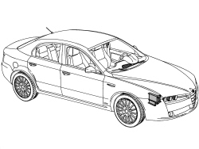
Applies to: all engines; all production periods
1. Use the hack saw following the cutting line in the diagram.
2. Remove the cut part from the vehicle.
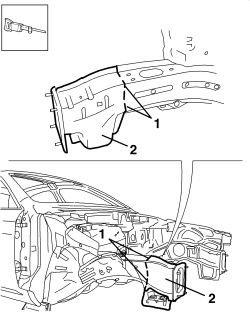
Applies to: all engines; all production periods
1. Use the hack saw following the cutting line in the diagram.
- Use a rotary brush to remove the paint to gain access to the spot welds.
2. Use the chamfering machine to remove the spot welds shown in the diagram.
- Use the hammer and chisel and remove the spot welds chamfered previously.
3. Remove the offcut from the vehicle.
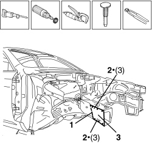
Applies to: all engines; all production periods
- Straighten the edges of the vehicle using a hammer and dolly block.
- Remove the spot weld residues using a disc grinder.
- Use a rotary brush to clean the areas treated previously.
1. Apply electro-galvanizing paint.
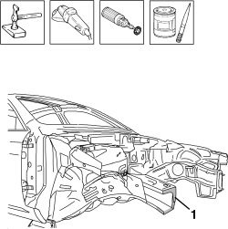
Applies to: all engines; all production periods
Refitting
Removing1. Use the hacksaw to cut the inner part, following the line shown in the figure to adjust to the required size.
2. Remove the anti-corrosion treatment from the entire perimeter of the inside and outside of the replacement part using a rotary brush.
- Apply electro-weldable paint to the edges involved.
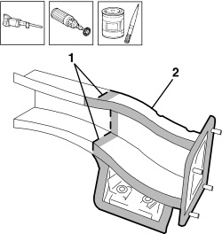
Applies to: all engines; all production periods
1. Position the inner part correctly on the vehicle and secure it using self-locking clamps.
- Check the alignment and the surrounding gaps.
2. Use a MIG welder to seam weld in the join areas.
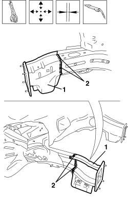
Applies to: all engines; all production periods
- Correct any distortions to the panel using a mallet and dolly block.
1. Use a disc grinder to level the welds.
- Use a rotary brush to clean the areas welded previously.
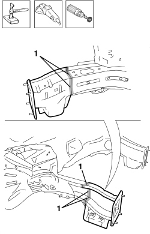
Applies to: all engines; all production periods
1. Apply anti-oxidant protection to the areas involved in the welding.
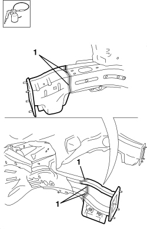
Applies to: all engines; all production periods
1. Apply electro-galvanizing paint.
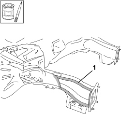
Applies to: all engines; all production periods
1. Use the hacksaw to cut the outer part, following the line shown in the figure to adjust to the required size.
2. Remove the anti-corrosion treatment from the entire perimeter of the inside and outside of the outer part using a rotary brush.
- Apply electro-weldable paint to the edges involved.
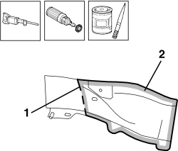
Applies to: all engines; all production periods
1. Position the outer replacement part correctly on the vehicle and secure it using self-locking clamps.
- Check the alignment and the surrounding gaps.
2. Use a spot welder in the areas shown in the diagram.
3. Use a MIG welder to seam weld in the join areas.
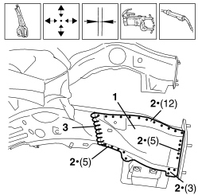
Applies to: all engines; all production periods
- Correct any distortions to the panel using a mallet and dolly block.
1. Use a disc grinder to level the welds.
- Use a rotary brush to clean the areas welded previously.
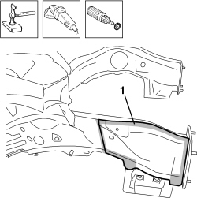
Applies to: all engines; all production periods
1. Apply anti-oxidant protection to the areas involved in the welding.
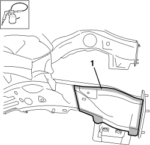
Applies to: all engines; all production periods
Op. 7210A32 R.R. PARTIAL FRONT SHOCK ABSORER TURRET MOUNTING (ONE), LEFT OR RIGHT